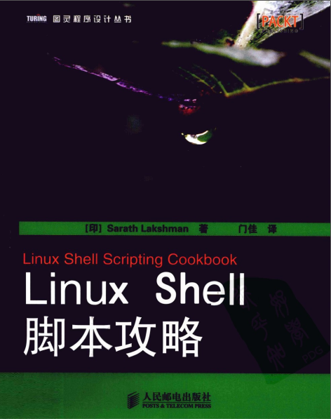

[评]Linux Shell 脚本攻略
《Linux Shell脚本功略》不仅介绍了常用的linux指令，而且还给每个指令配备了小脚本、小例子，并且每个例子都配有详尽的注释，对于刚入门shell并且想快速上手编写脚本的童鞋来说是不二的选择。

本书以章节的形式介绍了Linux的打印命令、文本处理命令、文档处理命令、归档压缩命令、加密与解密命令、系统资源查看命令、系统管理命令、网络相关命令。其中对文本处理命令(sed、grep、awk、find等)的讲解做到了深入浅出，使得像我这样的初学者能够对这些指令有比较正确的认识。
该书每个小节基本上是讲解一个命令或者一个脚本，并且讲解前告知读者需要的预备知识，讲解结束后会引申出命令的其他常用参数或其他实现功能的方式。只要读者跟着书上的脚本练习，做到掌握linux中的常用命令和参数应该不成问题。
这本书也存在一定不足，书中虽然也有讲解基础的shell语法，但只是使用一笔带过的形式，并没有详尽的阐述语法规则和编码规范。用于示范的操作系统是Ubuntu，并不是服务器端使用最多的redhat和其衍生版，这导致许多命令在centos中都无法找到。使用不同的网络协议来传输文件讲解的比较简单，对于像我这样的新手并不能理解。
一本书不可能总是面面俱到，在帮助新手了解linux常用指令和linux脚本编写方面这本书已经是做的十分的出色了。